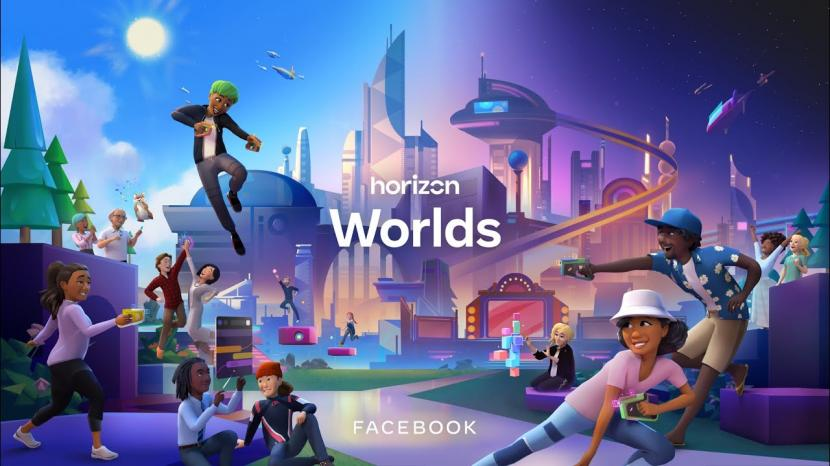
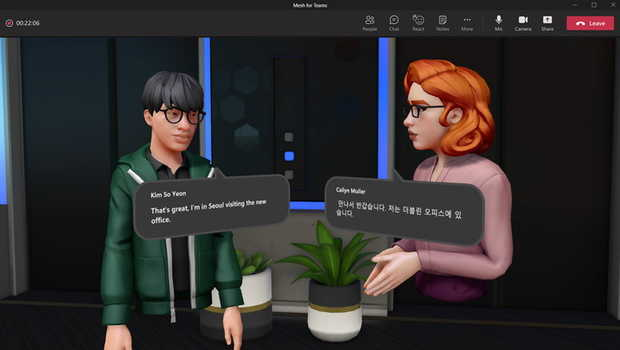
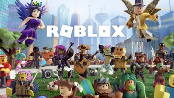

Meskipun metaverse sebagian besar masih mejadi konsep, tetapi ada perusahaan-perusahaan yang sudah menyediakan layanan Metaverse ataupun mengimplementasikan Metaverse dalam layanan mereka.
CONTOH-CONTOH METAVERSE
HORIZON WORLDS

Horizon World merupakan platform Metaverse yang diciptakan oleh Meta. Horizon World menyediakan dunia virtual yang dapat diakses dengan headset VR. Horizon Worlds menyediakan fasilitas yang berpusat kepada rekreasi berupa fasilitas dimana orang-orang dapat melihat-lihat dunia virtual dan memungkinkan mereka untuk saling berkomunikasi meskipun terpisah dengan jarak. Horizon Worlds juga akan berfokus kepada bisnis, hal ini ditandai dengan diperbolehkannya pembuat unutk membangun aset di Horizon Worlds dan menjualnya dengan uang sungguhan.
MICROSOFT METAVERSE
Saat ini, Microsoft juga sedang mengintegrasikan perusahaannya serta mengembangkan metaverse versi mereka. Microsoft mulai mencoba menggunakan hologram untuk berbagai keperluan seperti online meeting atau pekerjaan lainnya. Microsoft juga dikabarkan akan mengembangkan Metaverse yang berbasis Windows dan ditunjukkan untuk perusahaan. Microsoft dikabarkan akan mengadopsi produk mereka seperti Microsoft Power Point dan Microsoft Excel agar bisa digunakan juga di Metaverse buatan mereka.
ROBLOX
Roblox merupakan permainan video yang dikembangkan pada tahun 2006 oleh Roblox Corporation yang berfokus kepada mini games yang diciptakan oleh player lain, dan karakter kostumisasi. Roblox memungkinkan kita untuk mencipatakan mini games ataupun mencoba mini games buatan orang lain. Roblox menghadirkan sistem avatar yang akan kita pakai di mini game manapun, sehingga avatar menjadi identitas kita. Saat ini, Roblox juga terintegrasi dengan VR dan AR sehingga Roblox dapat dikatakan sebagai Metaverse yang hampir jadi. Roblox juga mengintegrasikan uang asli untuk membeli uang dalam game mereka (Robux) yang akan digunakan untuk transaksi seperti membeli kosmetik dan mendapatkan uang dari membuat game. Integrasi dengan uang asli ini menjadi pro-kontra, dimana ada pengembang game di roblox hanya mendapat bagian kecil dari hasil total, belum lagi ada masalah mempekerjakan anak di bawah umur untuk mengerjakan proyek mini game dengan upah yang sangat sedikit.